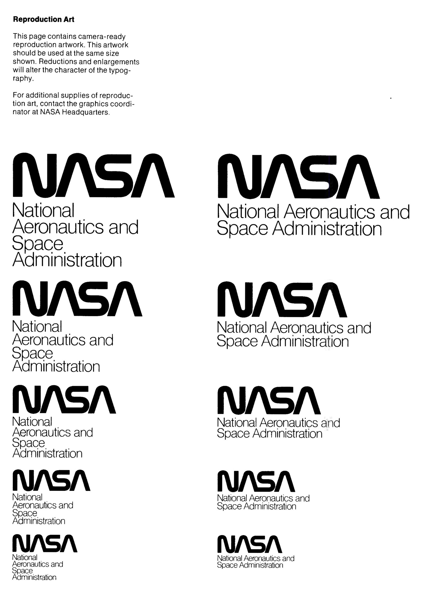
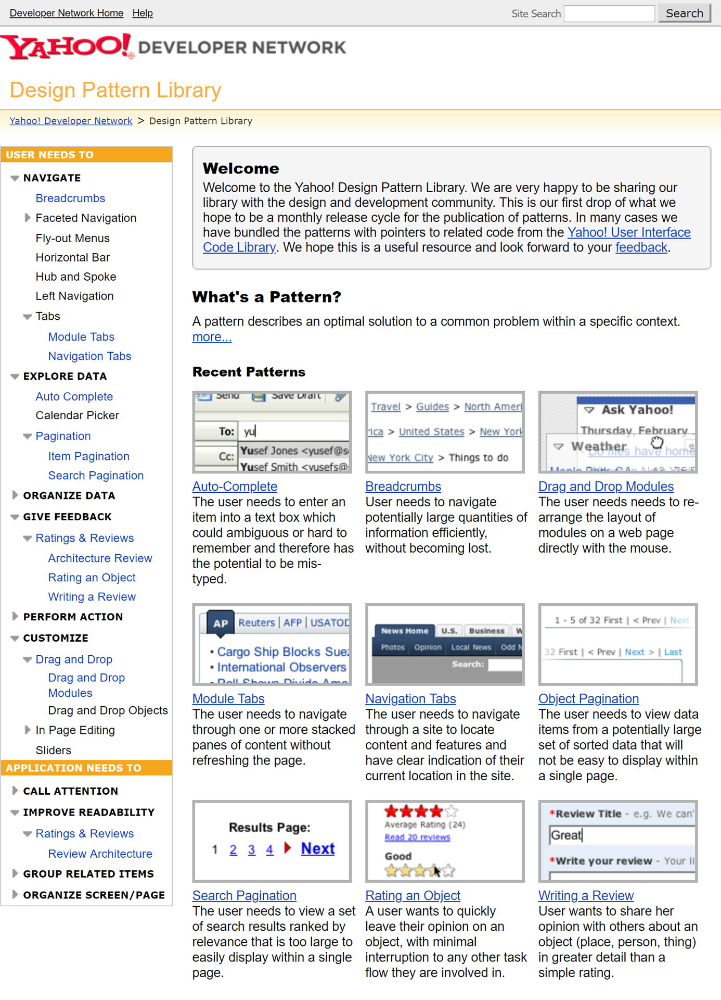
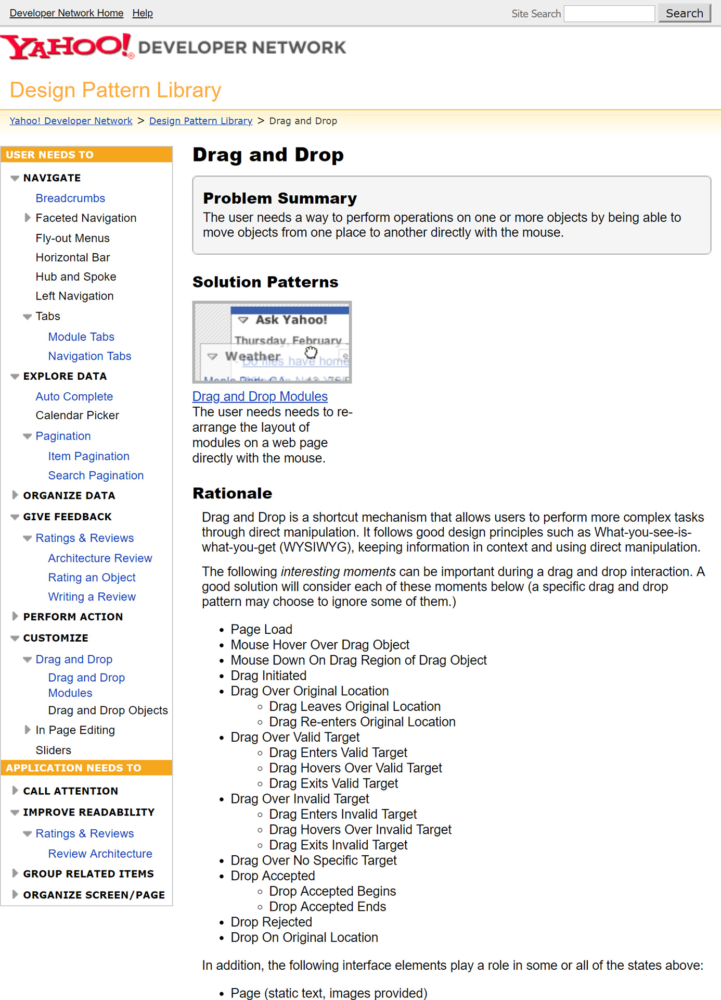
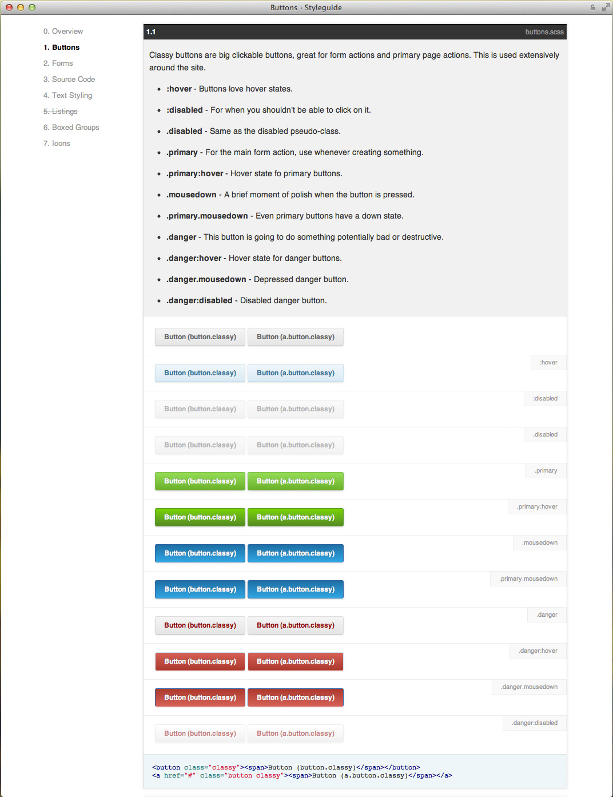
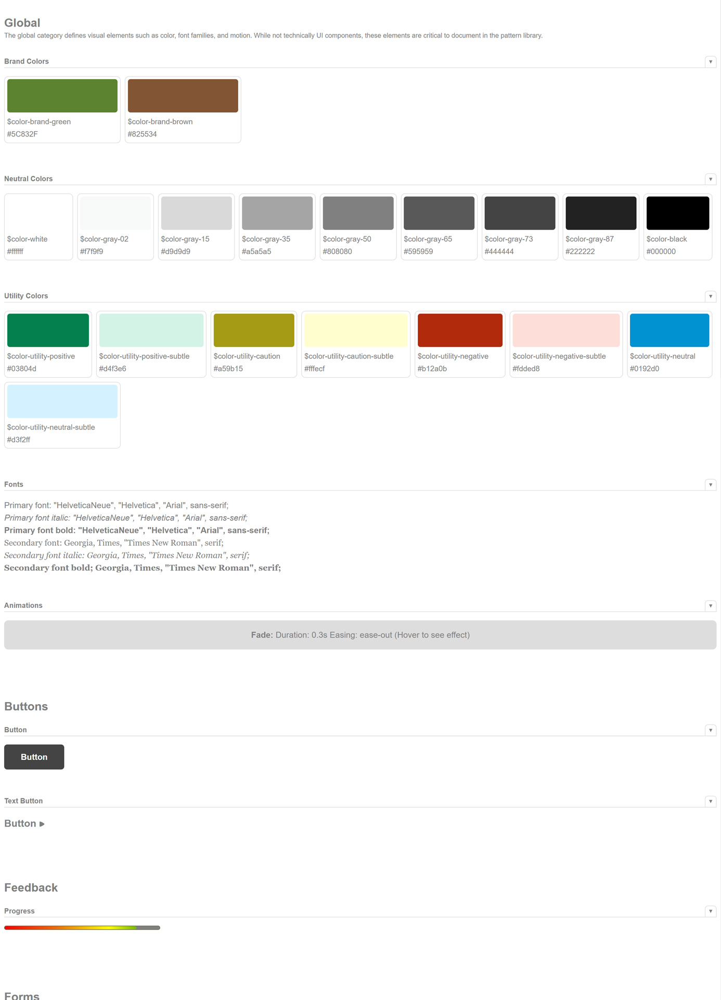

Design mit System
Überlebenshandbuch für und mit Pattern Libraries
Wer ist der Kerl?
- Erste Codezeilen als 10-Jähriger
- Websites seit 1995
- Ausbildung im Architektur- und Designumfeld
- Agentur seit 2000
- Faible für Systematik
Was redet der eigentlich?
- 1. Design System, Pattern Library & Co.
-
- Was, woher und wozu?
- Nutzen, Herausforderungen & Anwendungsszenarien
- 2. Pattern Library in der Praxis
-
- Am Beispiel des Nürnberg Digital Festivals
- Live-Anbindung TYPO3 ↔ Fractal
- Aufbau & Nutzung
Design System,
Pattern Library & Co.
Herkunft, Merkmale & Anwendungsszenarien
Gestaltungsrichtlinien für die klassischen Medien
Styleguide / Brand Manual
Inhalt
- Verwendung von Gestaltungselementen
- Schriftart, Schriftgrad & Zeilenabstand
- Satzspiegel & Gliederung
- Bildsprache
- Papiersorte & -format
- Druckfarben, -techniken und Veredelungen
Styleguide / Brand Manual
Zielsetzungen
- Dokumentation & Kommunikation eines Corporate Designs
- Entwicklung einer Corporate Identity
- medienübergreifend kohärente, konsistente Gestaltung
- Reproduzierbarkeit, Berechenbarkeit, Vereinfachung
- 
Styleguide / Brand Manual
Entwicklung
- manuell in einer Designphase
- tendenziell vor der Ableitung von Medienprodukten
- häufig sich-selbst-belegend
Digitale Medien
Übertragung auf interaktive Inhalte
Styleguide (digital)
Zielsetzungen
- grundsätzlich analog zu Print
- Ausdehnung auf Interface-Module und Richtlinien zu deren Nutzung
Styleguide (digital)
Besonderheiten
- zustandsreicher
- kontextabhängig
- Resonsive Design
- unterschiedliche Ausgabeplattformen
- Progressive Enhancement
- potenziell schnelllebiger
- 
- 
Styleguide (digital)
Entwicklung
- als Arbeitswerkzeug
- parallel zum Produkt, begleitend
- zur Dokumentation
- nach Fertigstellung (analog Print)
Living Styleguide
- verändert sich mit dem Produkt
- gibt den aktuellen Entwicklungsstand wieder
- laufende oder möglichst zeitnahe Aktualisierung
- toolgestützte Erzeugung
Living Styleguide
CSS-Dokumentationsparser

Living Styleguide
Styleguide-Generatoren
- erzeugen eine HTML-Dokumentation mit Code-Beispielen (HTML, CSS)
- Templating-Prozess wie bei Static Site Generatoren
- z.B. Pattern Primer, Pattern Lab

Living Styleguide
Styleguide-Plattformen
Komponenten
Modulare Architektur statt Spaghetti-Websites
Komponenten
- Component-Driven Design / Development
- Wiederverwendbare Bausteine, z.B. Menü, Tab-Navigation, Akkordeon, Karussell / Slider
- HTML, CSS, JavaScript
- Statische Assets (Bilder, Schriftarten, etc.)
- konkrete Anwendung der Gestaltungsrichtlinien
Patterns
_noun | pat·tern | \ˈpa-tərn\_
Modell, Struktur, Schema; Muster, Design, Ornament; Verhaltensmuster
Wahrnehmungsmuster
Perceptive Patterns
- Stilangaben: visuell, auditiv, Ausdrucksformen
- beschreiben die Art und Persönlichkeit eines digitalen Produkts und seiner Komponenten
- Analogie: Adjektive, z.B.
auffällig
,großzügig
,ruhig
,untergeordnet
Wahrnehmungsmuster
Beispiele
- Farben
- Typographie (Schrift, Absätze, Inline-Stile, Links, Aufzählungen, Zitate, etc.)
- Raster, Dimensionen & Abstände
- Interaktive Zustände, Animationen, Audio
- Fotos, Illustrationen, Ikonografie
- Ansprache & Ausdrucksformen (Microcopy)
- Statische Assets (Logos, Key Visuals, Claims, etc.)
Wahrnehmungsmuster
Im Web-Kontext
- Stile (CSS)
- Assets (z.B. Icons, Logos, Claims, etc.)
Verhaltensmuster
Functional Patterns
- konkrete, nutzbare Bausteine eines Interfaces
- ermöglichen oder unterstützen bestimmtes Nutzerverhalten
- Analogie: Verben / Nomen, z.B.
Informieren
,Navigieren
,Auswählen
,Senden
Verhaltensmuster
Beispiele
- Textdarstellungen & Abbildungen
- Strukturelemente (Kacheln, Mehrspaltigkeit, etc.)
- Navigation & Call-To-Actions
- Dialoge, Formulare & Formularelemente
- Interaktive Module (Karussell / Slider, Akkordeon)
- Fortschritts- & Zustandsanzeigen
Verhaltensmuster
Im Web-Kontext
- Struktur (HTML)
- Stile (CSS)
- Interaktion (JavaScript)
Komplexe Muster
Interaktive Abläufe
- Formularstrecken mit Fehler- und Erfolgsmeldungen
- domänenspezifische Abläufe, z.B. Einstellen einer Kleinanzeige, Ticketbuchung
- E-Commerce-Abläufe
Komplexe Muster
Persuasive Patterns
- Anmelde- bzw. Kontoeröffnungsvorgänge
- Onboarding- und
Getting Started
-Strecken Ongoing Engagement Patterns
Komplexe Muster
Im Web-Kontext
- Struktur, Stile, Interaktion (HTML + CSS + JavaScript + ?)
- User Experience (Psychologie)
Prinzipien, Strategien & Leitfäden
Motivation & Haltungsgrundlagen
Design Principles
Was bedeutet gutes Design
für Produkt und Team?
Wie wird es erreicht?
- markenbezogen
Lucid, Animated, Unbreakable
(Pinterest)- arbeitsweisebezogen
Do less, iterate, then iterate again
(GDS)- traditionsbezogen
Confidence, independence, honesty
(Jack Daniels)
Strategien
Konkrete Methoden zur Unterstützung & Erfüllung des Produktzwecks
- Technologie-Mix
- Vorgehensweisen im Detail, z.B. Font Loading, Barrierefreiheit, Testing
- Redaktionelle Stilmittel, z.B. Ansprache, Terminologie
- UX-Grundlagen, z.B. Personas, User Journeys
Richtlinien
- dokumentierte Handlungsweisen, z.B. Anleitungen, Tutorials
- Leitfaden zum Umgang mit Design-Komponenten (Erzeugung, Pflege)
- Onboarding neuer Team-Mitglieder
Design System
Sammlung aller produktrelevanten Gestaltungsgrundlagen
- Prinzipien, Strategien & Richtlinien
- Stile & Assets (Wahrnehmungsmuster)
- Interface-Komponenten (Verhaltensmuster)
- UX-Konzepte (Komplexe Muster)
Pattern Library
Tool-gestützte, mehr oder weniger umfassende
Manifestierung eines Design Systems
- zur Dokumentation
- zur Entwicklung
Alright, if we get philosophical about it: a design system is an abstract construct, and manifested in the physical realm by the documentation that is often referred to as the "system", while it only explains and exemplifies the system.
— Stephen Hay (@stephenhay) 23. August 2018
Dokumentation & Kommunikation
Szenario
- Umfangreiche Markenwelten mit mehreren digitalen Produkten
- Verschiedene, ggf. verteilte Design- & Entwicklungsteams
- Langfristige Nutzung
Entwicklung & Kollaboration
Szenario
- als Werkbank, auch bereits in frühen Projektstadien
- Entwicklung eines Produkts
- Interdisziplinäre Teams (Konzept, Design, Entwicklung, Tests)
- Agile / iterative Arbeitsweise
Entwicklung & Kollaboration
Zielsetzungen
- Einbindung von Stakeholdern in den Entwurfs- & Entwicklungsprozess
(Auftraggeber, Konzepter, Designer, Entwickler, Tester, Redakteure, Nutzer) - Kommunikation & Kollaboration
- Validierung & Tests
- Im Bestfall: Single Source of Truth
Vorteile
- interdisziplinäres Arbeiten, Rollenverteilung
- Defizite werden sichtbar, Wildwuchs wird entgegengewirkt
- Dokumentation von Anwendungsfällen & Ausnahmen
- Führung bei der Entwicklung von Komponenten
- Anschaulichkeit unterstützt Refactoring / Anpassungen
- Für Agenturen: Entwicklung & Evolution von Best Practices
Herausforderungen
- komponentenorientierte Entwicklungsstruktur & Arbeitsweise
- muss für alle Stakeholder verständlich und intuitiv nutzbar sein
- nachträgliche Einführung bedeutet Mehraufwand
- Style Guide Enforcer (
Hausmeister
) - Synchronizität von Produkt und Pattern Library
Grenzen & Schwachstellen
- Pattern Library ≠ Design System
- sorgt nicht automatisch für Konsistenz, gutes Design oder ein perfektes Nutzererlebnis
- entfaltet seine Stärke nur durch den richtigen Umgang damit
- notwendig: Kosteneffizienz + Verbesserung des Produkts (Nutzererlebnis, Nutzerzufriedenheit)
Pattern Library
in der Praxis
TYPO3 ⚭ Fractal → Nürnberg Digital Festival

- Community-Initiative zur Zusammenlegung bestehender, unabhängiger Webszene-Events in eine gemeinsame Veranstaltungswoche
- 2012: 10 Events
- 2017: 100+ Events / 8.000+ Teilnehmer
- 2018: Erstmals offiziell 10 Tage, 170+ Events
NUEWW-Website
- Projektübernahme zur Web Week 2013
- schnelle TYPO3-Website in einer Nacht-und-Nebel-Aktion
- ehrenamtliche Betreuung & Weiterentwicklung bis heute
- Anforderungen zusammen mit dem Format gewachsen, Generalüberholung lange überfällig
- Lastverteilung auf breiter aufgestelltes Team
Relaunch
Pattern Library
- Zentrale Arbeits- und Referenzplattform für alle Gewerke
- Single Source of Truth
- Immer 100% synchron mit dem Entwicklungsstand
- Dokumentationen für Redakteure
- Perspektivisch: Auch für Printprodukte
NUEWW Website Allstars
Balatonszepezd, Ungarn, Oktober 2017
Shared Language (1/5)
Entwickeln eines gemeinsamen Vokabulars
Shared Language
Entwicklung
- Produktmerkmale, -prozesse und -anforderungen
- projekt- und domänenspezifische Begrifflichkeiten
- muss für alle Disziplinen / Stakeholder funktionieren, sonst
→ Unverständnis
→ Fehlnutzung
→ Verwilderung / Vernachlässigung / Ablehnung der Pattern Library
Shared Language
Durchdachte Pattern-Namen
- spiegeln den Zweck wieder, nicht die Präsentationsform
Progress toggle button
stattCircle with a dot
- inspirieren zur Nutzung
Spotlight
stattProminent header
- haben Persönlichkeit und sind einprägsam
Boss & Minion Buttons
stattPrimary & Secondary Buttons
Shared Language
Konsequente Nutzung
- Benennung neuer Patterns in Team-Meetings
- Nutzung im täglichen Umgang
- Pattern Library Catch-Ups & -Meetings
- Glossar zur Shared Language
- Pattern Wall
Shared Language
Patterns (2/5)
Definition von Komponenten
Patterns
Ansätze
- 1. Patterns First
- Ableitung aus Produktzielen, Design Principles, Corporate Design
iterativ und parallel zum Screen-Design (und davor) - 2. Screen-Design (neu oder Bestand)
- Pattern Map, Design Inventory, Mood Boards, Collagen, etc.
Patterns
Design Inventory
- Zerlegen von Design-Ausdrucken in visuelle Module
- Identifikation funktionaler und ästhetischer Bausteine
- Ermitteln wiederkehrender Muster
- Separation nach Zweck & Funktionsweise
- Gruppieren von Varianten
Patterns
Nürnberg Digital Festival Pattern Wall
Patterns
Patterns
Übertragung in Komponenten
Tools (3/5)
Kombination & Zusammenspiel
Tools
TYPO3 als CMS
- in PHP-implementiertes Open Source Content Management System
- vielseitige, flexible APIs
- erweiterbar durch individuelle
Extensions
- framework- und technologieunabhängiges Frontend
Tools
Pattern Library
- Große Anzahl von Open-Source-Tools verfügbar
- Individuelle Auswahlkriterien
- Technologie-Stack (Node.js, PHP, React, Vue.js, etc.)
- Schwerpunkt (Dokumentation / Entwicklung)
- Komponenten-Workflows
- Erweiterbarkeit
- etc.
Tools
Fractal als Pattern Library
- Node.js-Anwendung → Gulp-Workflow
- flexibel und technologieunabhängig
- Komponenten + Dokumentation
- Webserver & statischer Export
- erweiterbar
Tools
Herausforderungen
- Fractal standardmäßig auf einfaches Templating ausgelegt (Handlebars)
- Fractal dateibasiert (JSON + Templates für Komponenten, Markdown für Dokumentation)
- TYPO3 kombiniert HTML-Rendering-Mechanismen
- Fluid (Templates + View Helper)
- TypoScript (konfigurationsbasierrtes Rendering)
- Extbase-Plugins (MVC-Architektur)
- Form Framework, Custom Content Elements, HTTP-Requests, etc.
Tools
TYPO3 ⚭ Fractal
- Individuelle TYPO3-Extension
- Definition von Komponenten + Resourcen (Templates, CSS, JavaScript, etc.)
- Export eines JSON-Komponenten-Katalogs via CLI-API
- Individuelle Fractal-Extension
- Konsumiert JSON-Komponenten-Katalog
- TYPO3 als externer Template-Engine via HTTP

Struktur (4/5)
Organisation & Navigation von Komponenten
Struktur
Organisationsansätze
- abhängig von Team und Tool
- Gliederung: einfache Liste, hierarchisch, etc.
- Sortierung: nach Alphabet, Zweck, logischen Gruppierungen, etc.
Struktur
Hierarchische Gliederung in Bereiche und Sinngruppen
| Bereich | Doku | SVG | CSS/JS | HTML |
|---|---|---|---|---|
| 1. Principles | ✓ | |||
| 2. Styles & Assets | ✓ | ✓ | ||
| 3. Elements | ✓ | ✓ | ||
| 4. Compositions | ✓ | |||
| 5. TYPO3 Content Elements | ✓ | ✓ |
Nutzung & Betrieb (5/5)
Workflows in der Entwicklung
Nutzung & Betrieb
Neue Komponenten
- Komponentendefinition im TYPO3
- Benennung
- Typ & Resourcen
- Synchronisieren der Pattern Library
Nutzung & Betrieb
Entwicklung
- Perspektiven: Template, Kontext, HTML, Dokumentation
- Live-Rendering via TYPO3
- Varianten
Nutzung & Betrieb
Übersicht & Tests
- Status
- Abhängigkeiten
- Responsives Verhalten
- Barrierefreiheit via Tenon.io
Potenzial
Ausblick & Möglichkeiten
Potenzial
- Anbindung an Design-Tools (Sketch, Adobe XD, etc.)
- Visual Regression Testing
- Progressive-Enhancement-Stadien
- Versionierung
- Kommunikations-Features
- Print-Produkte integrieren
Danke!
- 16.-17. November 2019, Berlin
- Accessibility Club Summit 2019
Barcamp + Workshops — https://a11y.club - 20. März 2020, Reykjavík, Island
- Material 2020: The Web as a Material — https://material.is/2020
Discount-Code »jd19de« bis 20.9.2019